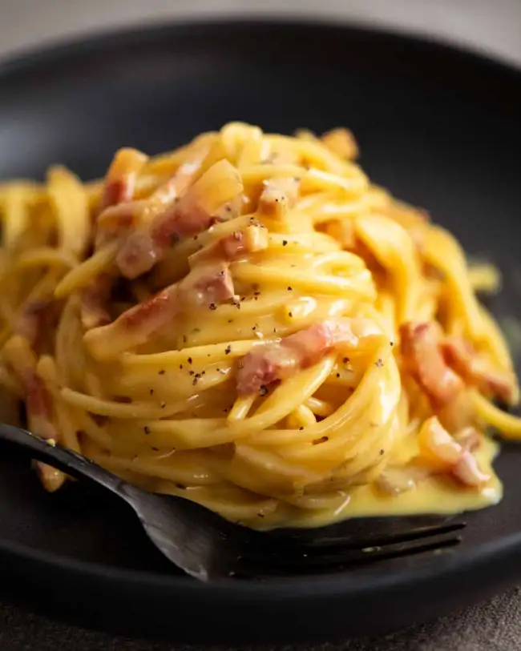

Carbonara

Spaghetti carbonara
This is a real spaghetti carbonara recipe made the traditional Italian
way, without a single drop of cream. It relies solely on egg and cheese to
make a luscious, creamy carbonara sauce. Food fit for a king (or queen!)
that proves simple can be magnificent.
Original recipe on recipetineats
Ingredients
- 175g/6 oz guanciale (pancetta or block bacon)
- 2 large eggs
- 2 egg yolks
- 100g/3.5 oz parmigiano reggiano
- 1/4 tsp black pepper
- 400g/14 oz spaghetti
- 1 tbsp cooking/kosher salt
- 1/2 cup pasta cooking water
- 1 garlic clove
- garnish (parsley, parmigiano reggiano)
Steps
- Guanciale: Cut into 0.5cm / 1/5" thick slices then into batons
-
Finely grate the parmigiana reggiano or pecorino. I use a microplane
-
Carbonara sauce:Place eggs and yolks in a large bowl. Whisk to combine.
Then stir in the parmesan and pepper.
-
Bring 4 litres (4 quarts) of water to the boil with 1 tablespoon of
salt. Cook the pasta per packet directions. It should be firm, not soft,
but fully cooked through.
-
Just before draining, scoop out one cup of pasta cooking water. Then
drain the pasta in a colander.
-
Cook guanciale: While the pasta is cooking, place guanciale in a non
stick pan over medium high heat. Cook for 4 to 5 minutes until golden.
No oil needed: as the guanciale heats up, the fat will melt so it fries
in its own fat. If using garlic, add it in the last minute
-
Tumble the hot pasta into the pan with the guanciale then toss so the
pasta gets coated in the guanciale fat
-
Tip the hot pasta into the bowl with the egg and use a rubber spatula to
scrape out every drop of the guanciale fat into the bowl. That stuff is
gold!
- Add 1/2 cup pasta cooking water into the bowl.
-
Mix vigorously with the handle of a wooden spoon, spinning the pasta
around, for around 30 seconds to 1 minute. Watch as the watery pale
yellow liquid magically transforms into a creamy sauce. You know it’s
ready when the sauce is no longer watery and pooled in the bottom of the
bowl. Instead, it will be thickened, creamy, and clinging to the pasta!
- Serve immediately in warm bowls. Pasta waits for no one!